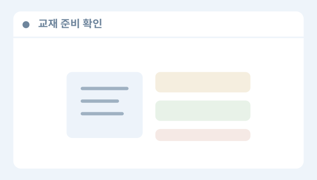
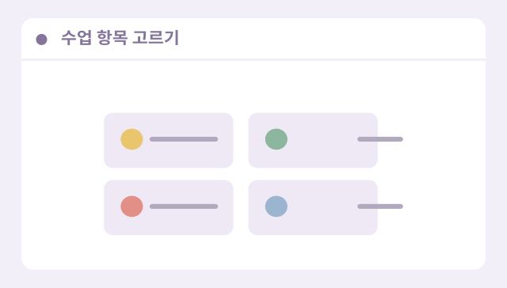
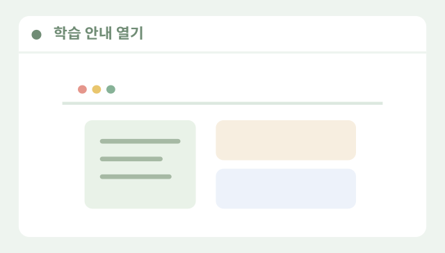
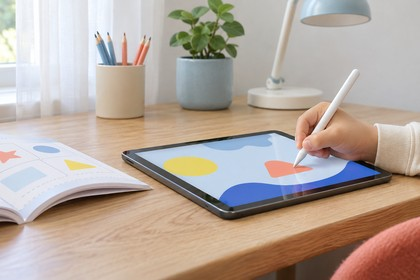
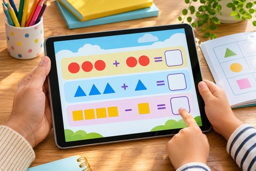

구독 안내 보기온라인에서 과목별 학습을 이용할 수 있습니다.
꿈나무 학습 자료
초등 학습 메뉴를 구독 조건에서 살펴보세요.
구독 안내 보기
교과 수업 과목
과목별 콘텐츠 구성- 초등 교과
과목 구성5과목 - 교과 과정
학습 콘텐츠서비스 기능학습 메뉴 살펴보기
과목별 학습 자료 - 꿈나무
학습 영역4영역교과 · 읽기
수학 · 영어
꿈나무 서비스 구성교과·읽기·수학·영어 학습을 확인하세요.
학년과 과목에 따라 학습 메뉴를 고를 수 있습니다.
교과 학습교과 복습과 단원 평가 문제를 확인하세요.
(국어·수학·사회·과학·영어) 읽기·독서어휘, 글 이해, 독서 활동을 다룹니다.
읽기 자료와 어휘 문제를 제공합니다. 수학학습 수준을 확인하는
수학 문제와 풀이 활동 영어어휘와 문장 읽기를 연습하는
영어 학습 메뉴 학습 질문학생의 과목별
진도를 확인할 수 있을까요?
구독 방식과 제공 과목을 확인하세요.
과목별 수업과 문제를살펴볼 수 있습니다.
문제 풀이
읽기 이해
오늘의 과제
탐구 활동
수학 연습
디지털 정보 읽기
여러 과목의 기초를 익혀 학습 범위를 넓힐 수 있습니다.
학습 도구꿈나무 수업에서
과목과 문제를 확인할 수 있습니다.학습 화면에서 여러 과목 메뉴를 이용하고
읽기, 문제 풀이, 과제 확인을 할 수 있습니다.

영상과 문제를 함께 이용하는 수업

놀이형 문제와 보상 활동

단원별 수업과 복습 문제
학습 항목 3학습 계획을 직접
정해 이용할 수 있습니다.학습 자료를 보고 문제를 풀며
과목별 학습 내용을 확인할 수 있습니다.
- 학습 결과를 확인하는 주간·월간 기록주간·월간·단원 기록에서 학습 결과를 확인하고 다음 과목을 고를 수 있습니다.
- 학습 결과에 맞춘 문제 추천학습 결과와 평가 항목에 따라 연습할 문제를 표시합니다.
- 틀린 문제 다시 풀기틀린 문항과 비슷한 문제를 다시 풀어 답을 확인합니다.
- 학습 기록에서 평가 결과 확인영역별 평가와 학습 기록을 확인할 수 있습니다.
학습 결과를 확인하는 주간·월간 기록주간·월간·단원 기록에서 학습 결과를 확인하고 다음 과목을 고를 수 있습니다.
학습 결과에 맞춘 문제 추천학습 결과와 평가 항목에 따라 연습할 문제를 표시합니다.
틀린 문제 다시 풀기틀린 문항과 비슷한 문제를 다시 풀어 답을 확인합니다.
학습 기록에서 평가 결과 확인영역별 평가와 학습 기록을 확인할 수 있습니다.
온라인 수업온라인 수업에서
수업 활동과 소통 방법을
확인할 수 있습니다.수업 채팅에서 지켜야 할
대화 예절을 안내하는
디지털 이용 수칙을 읽어 보세요.
- 온라인 수업 이용 수칙

수업 영상과 참여 기능- 모둠 활동

질문 메뉴에서 내용을 확인하세요.
학습 메뉴과목별 메뉴에서 제공 내용을 확인하세요.
- 전체
- 교과 학습
- 심화 문제
- 유아 학습
- 학습 기록
- 학습 만화
교과 학습
교과 학습국어·수학·사회·과학 과목을
학년별 단원 수업과 문제로 살펴봅니다.교과 학습
평가 문제단원별 복습 문제와
평가 학습 항목을 확인할 수 있습니다.심화 문제
읽기 이해주제별 읽기 글과 문제로
글의 내용과 어휘를 확인합니다.심화 문제
수학 학습수학 문제와 풀이 과정을
수준별 메뉴에서 확인할 수 있습니다.심화 문제
영어 학습영어 글에서 어휘와 문장을 확인하세요.
읽기 문제와 문법 연습을 제공합니다.유아 학습
학교 생활 준비입학 준비와 학교 안전 수칙을 살펴봅니다.
준비 항목을 확인할 수 있습니다.유아 학습
유아 과정신체·의사소통·사회·예술·
자연 탐구 주제의 노래와 활동을 제공합니다.유아 학습교과 학습
기초 과목게임형 활동으로 받아쓰기와 수 연산,
영어 기초 문제를 풀 수 있습니다.유아 학습교과 학습
영어 기초영어 어휘와 문법,
말하기 활동을 영역별로 확인합니다.심화 문제
디지털 정보 읽기온라인 자료의 출처와 내용을 살펴보고
정보를 확인하는 활동을 합니다.심화 문제
독서학년별 읽기 자료를 확인하고
읽은 내용을 기록할 수 있습니다.학습 기록
실시간 수업교과 주제를 함께 확인하는
실시간 수업을 안내합니다.학습 만화
학습 만화교과와 관련한 주제를 다루는
읽기 메뉴에서 만화 자료를 볼 수 있습니다.전체
교과 학습
심화 문제
유아 학습
학습 기록
학습 만화
교과 학습
교과 학습국어·수학·사회·과학 과목을
학년별 단원 수업과 문제로 살펴봅니다.교과 학습
평가 문제단원별 복습 문제와
평가 학습 항목을 확인할 수 있습니다.심화 문제
읽기 이해주제별 읽기 글과 문제로
글의 내용과 어휘를 확인합니다.심화 문제
수학 학습수학 문제와 풀이 과정을
수준별 메뉴에서 확인할 수 있습니다.심화 문제
영어 학습영어 글에서 어휘와 문장을 확인하세요.
읽기 문제와 문법 연습을 제공합니다.유아 학습
학교 생활 준비입학 준비와 학교 안전 수칙을 살펴봅니다.
준비 항목을 확인할 수 있습니다.유아 학습
유아 과정신체·의사소통·사회·예술·
자연 탐구 주제의 노래와 활동을 제공합니다.유아 학습교과 학습
기초 과목게임형 활동으로 받아쓰기와 수 연산,
영어 기초 문제를 풀 수 있습니다.유아 학습교과 학습
영어 기초영어 어휘와 문법,
말하기 활동을 영역별로 확인합니다.심화 문제
디지털 정보 읽기온라인 자료의 출처와 내용을 살펴보고
정보를 확인하는 활동을 합니다.심화 문제
독서학년별 읽기 자료를 확인하고
읽은 내용을 기록할 수 있습니다.학습 기록
실시간 수업교과 주제를 함께 확인하는
실시간 수업을 안내합니다.학습 만화
학습 만화교과와 관련한 주제를 다루는
읽기 메뉴에서 만화 자료를 볼 수 있습니다.구독 및 제공 과목은
구독 안내에서 확인하세요.이용 가능한 학습 메뉴와
요금 정보는 도움말에서 확인하세요.
요금과 이용 조건은 문의해 주세요.
꿈나무요금 문의
서비스 문의요금 문의
기관별 구성요금 문의
과목별 수업요금 문의
등록 방법요금 문의
구독 방식 비교기기와 이용 조건은
이용 조건은 도움말에서 확인하세요.
- 이용 조건은
상담으로 확인하세요. - 사용 기기는
문의해 주세요. - 해지 관련
안내는 전화로 확인하세요.
- 다른 서비스
- 이용 기간
이용 조건은 다를 수 있습니다. - 기기 관련
문의해 주세요. - 이용 약관을 확인하세요.
추가 비용 여부
꿈나무스마트학습교과 학습교과 수업과 복습 문제를 확인할 수 있습니다.
과목별 학습 메뉴와 기록을 이용할 수 있습니다.
읽기 연습학습 기록에 따라 읽기 자료와 낱말 문제를 고릅니다.
글의 내용과 낱말 뜻을 확인하는 읽기 활동을 제공합니다.
수학 연습이전 문제 풀이와 정답 여부를 바탕으로
수준에 맞는 개념 설명과 연습 문제를 제시합니다.
영어 학습학습한 내용과 풀이 결과를 살펴
단계별 영어 자료와 연습 과정을 안내합니다.
학습 이용 방법이용 가능한 학습 항목과 기간을 살펴보세요.
초등 학습(초등 입학 준비부터 6학년까지)
월 이용월 이용 금액은 문의해 주세요.
- 초등 입학 준비와 학년별 교과 학습을 안내합니다.
- 교과 수업과 읽기·수학 자료를 이용할 수 있습니다.
- 입학 전 준비 과정을 확인할 수 있습니다.
- 실시간 수업 일정과 참여 방법을 확인하세요.
- 새 자료
유아 학습(유아 대상)
6개월 이용 기간이용 금액은 문의해 주세요.
- 유아 연령에 맞는 학습 자료를 안내합니다.
- 한글·낱말·수와 연산·영어·동요·동화를 다룹니다.
- 노래와 활동으로 한글, 수학, 누리과정 내용을 익힙니다.
- 연령에 맞는 짧은 문제와 듣기 자료를 제공합니다.
이용 기간과 신청 방법은 문의로 확인해 주세요.
초등 학습 메뉴를 구독 조건에서 살펴보세요.
구독 안내 보기